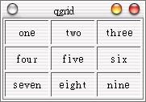

設計視窗程式的人都知道，在視窗程式中最麻煩也最難的就是版面配置，每次都為了元件的位置擺放在傷腦筋，所以視窗程式的解決方案都會提供一些現成的版面配置方式，在這邊我們介紹QGrid版面配置，它會如同棋盤般排列Widget，首先我們撰寫以下的程式：
#include <qapplication.h>
#include <qgrid.h>
#include <qlabel.h>
class MyWidget : public QGrid {
public:
MyWidget(int n, QWidget *parent=0, const char *name=0);
};
MyWidget::MyWidget(int n, QWidget *parent, const char *name)
: QGrid(n, parent, name) {
const QString texts[] = {"one", "two", "three",
"four", "five", "six",
"seven", "eight", "nine"};
QLabel *label;
setSpacing(2);
setMargin(2);
for(int i = 0; i < 9; i++) {
label = new QLabel(texts[i], this, "label");
label->setMinimumSize(55, 0);
label->setAlignment(Qt::AlignCenter);
label->setFrameStyle(QFrame::Panel + QFrame::Sunken);
}
}
int main(int argc, char **argv) {
QApplication app(argc, argv);
MyWidget wm(3);
wm.resize(150, 100);
app.setMainWidget(&wm);
wm.show();
return app.exec();
}
以上的寫法是直接繼承QGrid類別，相信您大致也可以看出如何使用QGrid類別，我們解釋必要的程式碼部份，首先，設定每一個Grid的空間與彼此之間的邊界：
setSpacing(2);
setMargin(2);
利用迴圈將QLabel元件加入QGrid，由於我們繼承了QGrid，所以父類別指定為this，也就是目前的類別，QLabel會由左而右、由上而下依序加入QGrid中，我們設定了QLabel的最小尺寸、顯示位向與樣式：
for(int i = 0; i < 9; i++) {
label = new QLabel(texts[i], this, "label");
label->setMinimumSize(55, 0);
label->setAlignment(Qt::AlignCenter);
label->setFrameStyle(QFrame::Panel + QFrame::Sunken);
}
在這個例子中，3是傳遞給QGrid的，我們的QGrid會包括3x3個Grid：
MyWidget wm(3);
就這個程式而言，不使用自訂Widget的方法的話，也可以如下撰寫：
#include <qapplication.h>
#include <qgrid.h>
#include <qlabel.h>
int main(int argc, char **argv) {
QApplication app(argc, argv);
QGrid grid(3);
QLabel *label;
const QString texts[] = {"one", "two", "three",
"four", "five", "six",
"seven", "eight", "nine"};
grid.resize(150, 100);
grid.setSpacing(2);
grid.setMargin(2);
for(int i = 0; i < 9; i++) {
label = new QLabel(texts[i], &grid);
label->setFrameStyle(QFrame::Panel + QFrame::Sunken);
label->setMinimumSize(55, 0);
label->setAlignment(Qt::AlignCenter);
}
app.setMainWidget(&grid);
grid.show();
return app.exec();
}
下圖是程式的執行結果：

|
|